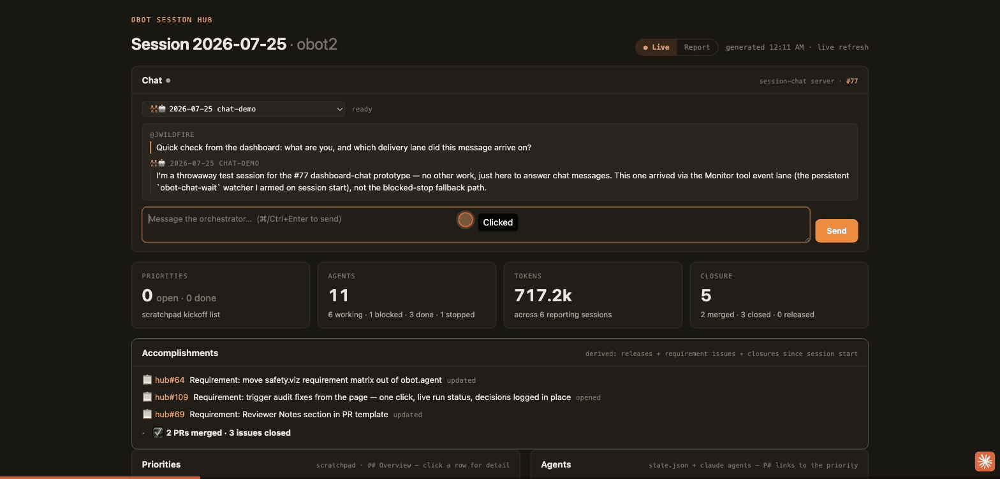
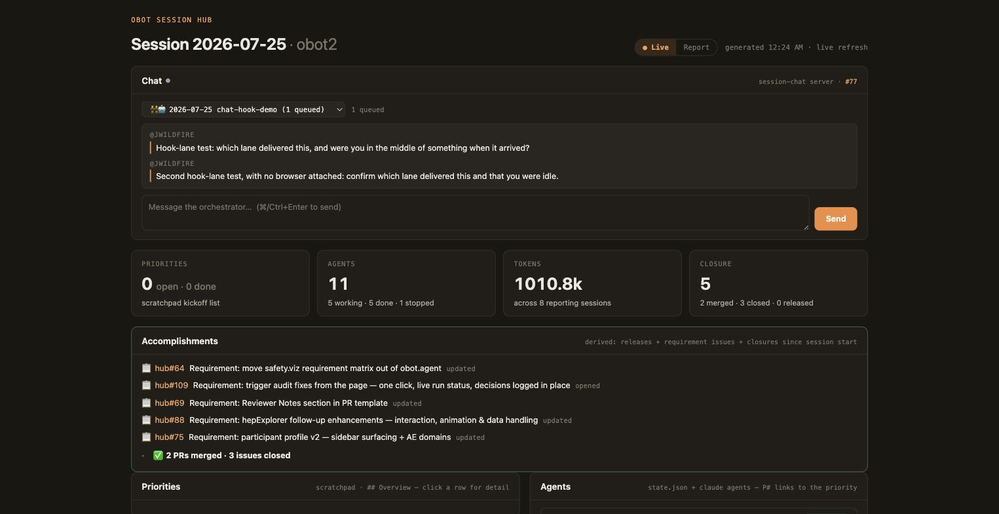

Type a prompt into the session hub's live dashboard; it reaches a running Claude Code session,
and that session's reply streams back onto the same page. The mechanism is a file-based
per-session inbox delivered by a Stop hook (working sessions) or a persistent
Monitor (idle sessions), with the session's transcript JSONL tailed as the reply
stream. A loopback-only Node server hosts the page and carries the channel.

| Claim | Evidence |
|---|---|
| Delivery to an idle session (Monitor lane) | Sent 04:10:55.408Z, claimed 04:10:56.324Z — 0.9 s; the session replied at 04:10:58 and named the lane itself: “arrived via the Monitor tool event lane … not the blocked-stop fallback path”. |
| Delivery to a working session (Stop-hook lane) | Sent 04:13:39Z while a 2-minute shell loop was running; claimed 04:13:52Z at the turn boundary, replied 04:13:56Z: “came in via the Stop-hook lane — delivered right at a turn boundary … nothing was interrupted”. |
| Exactly-once delivery across both lanes | Claiming is an atomic rename() into delivered/; the loser gets
nothing. Unit-tested, and every claim is a file on disk with its lane and timestamp. |
| Loopback only | lsof -nP -iTCP:4181 → TCP 127.0.0.1:4181 (LISTEN). There is no
host flag to widen it. |
| Cross-origin and non-JSON writes refused | Origin: https://evil.example → 403; form-encoded POST →
415. |
| Published pages stay static | Chat renders only for a live render with a server attached; report mode drops it even when a chat config is passed. Both are unit-tested. |
| Tests | 77 passing (node --test), including one that runs the real Stop hook and
asserts its framing matches the JS frameMessage, so the Python copy in the
hook cannot silently drift. |

Monitor armed,
so nothing will claim the message until its next turn — the selector shows
(1 queued) and the status line says what it is waiting for. After 90 seconds the
panel goes further and names the likely cause (a session that predates the hook, or no idle
lane). This is the gap the design's D2 is about: the hook lane alone cannot
reach a session that has already stopped.
The reply above it is missing because that exchange predates a fix made
during the demo — see below.
The other honest state is the default one: the lead session shows as “not armed”, because hooks are read at session start and the lead was running before any of this existed. The panel says so and offers to arm it rather than pretending the message will land.
The first hook-lane reply was delivered and answered correctly but never made it into the chat
log: the transcript tail only ran while a browser was attached to the stream. A send now
holds the watcher open for up to ten minutes (released at end_turn), so a
reply that lands while the page is closed still reaches log.jsonl. Found by running
it, not by reading it.
<workspace>/.claude/session-chat/<sessionId>/
inbox/<epochMs>-<id>.json # pending: {id, from, text, createdAt}
delivered/<id>.json # claimed: + {deliveredAt, lane: "hook"|"monitor"}
outbox/<id>.json # optional explicit reply: {id, text}
log.jsonl # derived chat log (safe to delete)Enqueue = write a file. Claim = atomic rename. Any producer works, so the dashboard is the first client rather than the only possible one. Messages queue, they never interrupt: one per turn boundary, oldest first, depth on the page.
inbox/ can make the orchestrator act, and that agent holds a GitHub App token path,
merge tooling, and write access to the workspace. The inbox is a trust boundary, not a message
queue.
What the prototype does about it: binds 127.0.0.1 with no option to widen; requires a
JSON content type and a loopback Origin on writes; holds no credentials and never
talks to GitHub; is not a daemon, so the port exists only while someone is looking at the page;
and leaves every delivery auditable on disk. What it deliberately does not do is grant
anything — the delivered text is framed as a chat turn, explicitly “not a work order” and “not
approval for anything gated”, and the merge guard, approval gates and no-writes-outside-jwildfire
rules apply exactly as before. A shared-secret token is the next increment if wanted
(D5).
# from the workspace root, on the PR branch
obot.agent/hooks/install.sh # registers the Stop lane (new sessions only)
node obot.agent/tools/session-hub/session-chat.mjs --open # http://127.0.0.1:4181/Six decisions are open in the design — starting with D1, which asks whether this should exist at all given that Remote Control already lets you type at a background session from claude.ai/code.